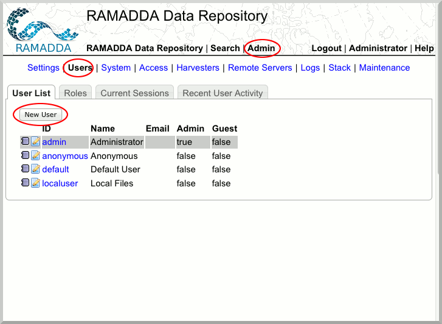
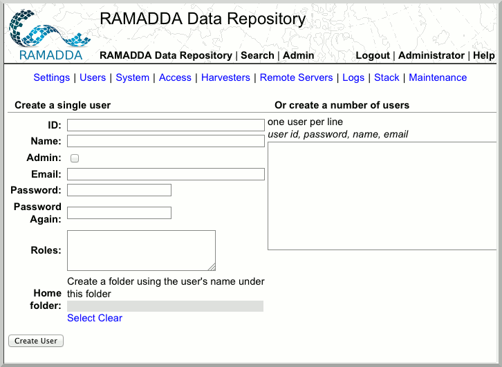
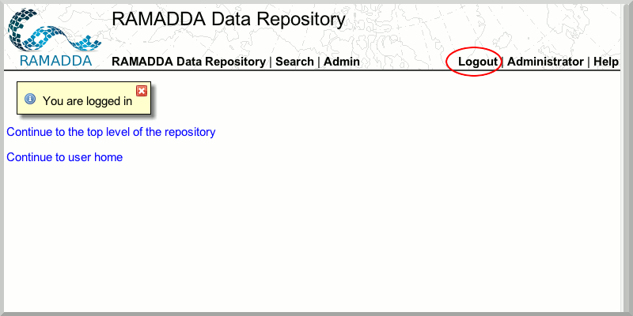

Creating Users and Roles
Now that you have set up the RAMADDA admin account, you are ready to set up users and roles.
- In RAMADDA, select the Admin tab and Users subtab and click "New User"

- Create one or multiple users as well as roles. A role authorizes a user to perform certain operations within RAMADDA. For the purposes of this exercise, create an "IDV" role, in the "Roles" text area. Also select a "Home folder" in the "Users" folder by clicking on the "Select" link at the bottom. This home folder creation is important as we will be using it later.

- Please logout of your admin account.

You are now ready to start publishing data via the IDV